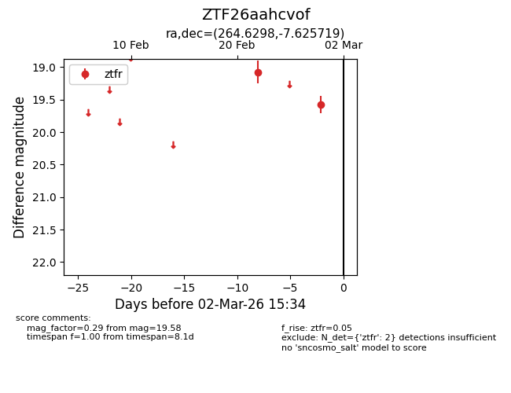
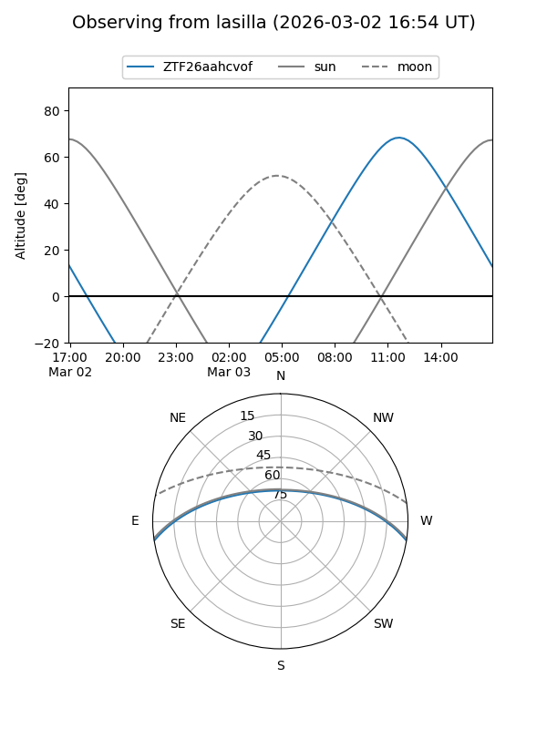
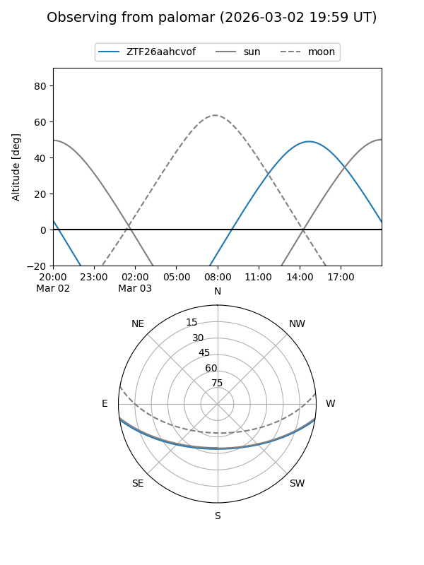

ZTF26aahcvof
Target ZTF26aahcvof at 2026-03-02 15:39
Aliases and brokers:
FINK: link
Lasair: link
ALeRCE: link
alt names
ZTF26aahcvof (ztf,fink_ztf)
Coordinates:
equatorial (ra, dec) = 264.6298,-7.62572
equatorial (HMS+DMS) = 17:38:31.15,-07:37:32.59
galactic (l, b) = (17.5219,+12.44136)
Flags:
Photometry:
last ztfr=19.58
2 ztfr detections
Lightcurve

Visibility


Additional plots